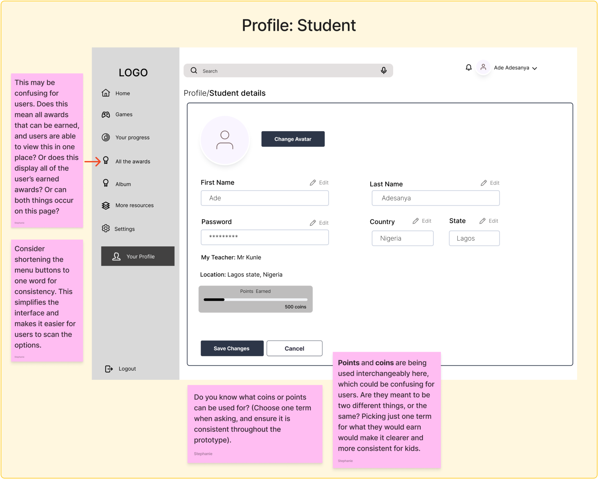
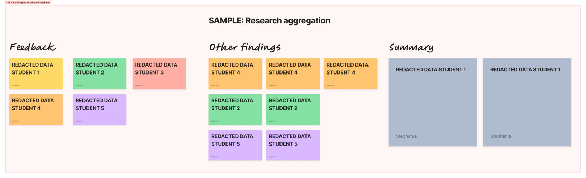

Dyslexia App: Phase 2 User Research Process
Role: User Researcher Tools: Miro, Figma, Figjam, Google Forms, Google Sheets, Zoom Client: Dyslexia Foundation Nigeria Duration: 11 weeks
Team members: Stephanie Maltese, Austin Baldi, Isidora Vladic, Monsurat Akinsemoyin, Salomé Moshfegh-Shieh, Sohini Moravineni
Background
Dyslexia is a learning disorder that often goes unrecognized or is misunderstood, particularly in regions like West Africa, where awareness and resources to support children with dyslexia are limited.
The goal: to create a digital platform that supports children with dyslexia in improving their literacy and learning skills in an effective and enjoyable way. Additionally, the platform will provide instructors with tools to track student progress, take notes, and interact with their students more effectively.
This initiative is part of a multi-phase effort, with our team focusing on Phase 2. Over the course of 11 weeks, we collaborated on a pro bono basis to conduct user research and usability testing, gathering insights from instructors and students to evaluate the current designs, identify areas for improvement, and inform future iterations.
Executive Summary
Phase 2 built on the foundational work of Phase 1, focusing on testing and iterating on design and research concepts. The primary goal was to ensure that all data and insights were consistent with user needs and grounded in validated research. Key tasks included:
- Validating Phase 1 research to refine personas, ensuring alignment with real user needs and frustrations.
- Refining survey questions to improve clarity, inclusivity, and the quality of insights gathered.
- Conducting usability tests with educators and students, analyzing feedback to identify patterns and key areas for improvement.
- Synthesizing findings from usability testing to deliver clear, prioritized insights for Phase 3 development.
Our Process
To build a strong foundation for Phase 2, we began by validating research findings from Phase 1, which included reviewing insights gathered from interviews and surveys. Each team member was assigned specific claims from the existing persona created during Phase 1, and our task was to validate these claims by tracing them back to the original research data.
1. Validating research and refining the persona
To build a strong foundation for Phase 2, we began by validating research findings from Phase 1, which included reviewing insights gathered from interviews and surveys. Each team member was assigned specific claims from the existing persona created during Phase 1, and our task was to validate these claims by tracing them back to the original research data.
For my assigned claims, I analyzed interview and survey responses to identify evidence that supported or contradicted these statements. I documented each finding with its source, ensuring the persona was grounded in real user feedback. I clarified key use goals and frustrations, which were integral to refining the persona and ensuring it was researched-backed and actionable.
This refined persona, a result of the validated research, served as a critical tool for planning and conducting usability testing in this phase, while also informing future design decisions.
2. Survey creation and outreach
In Phase 1, initial surveys were drafted and deployed to explore user needs and experiences with dyslexia, targeting parents/students and educators. In Phase 2, we expanded on this work, refining the surveys to gather deeper, more actionable insights. This included revising existing questions, restructuring the format, and preparing the surveys for usability test participants and further research responses.
Each team member was assigned questions to refine, omit, or expand upon, and the examples above highlight my contributions.
During the revision process, I focused on:
- Rewording open-ended questions to include clear options and examples, ensuring participants could provide more focused and relevant responses.
- Transforming broad or ambiguous questions into targeted, multiple-choice formats to streamline data collection and enable more effective analysis of results.
- Simplifying and clarifying question wording to make the survey more inclusive and understandable for all participants, while aligning responses with research goals to gather meaningful insights into user behaviors.
Once individual revisions were complete, we collaborated as a team to review and iterate. We provided feedback on one another’s work and voted on which responses to include in the final surveys. These refinements not only optimized the surveys for participants but improved the quality of insights gathered, enabling a deeper understanding of user needs and behaviors to guide future design decisions.
3. Usability test planning and creation
During this sprint, our team reviewed and collaborated to provide feedback on the wireframes for the UX design team. Part of this process included adding comments directly on the prototype, identifying areas that could be clarified or improved.
The visual above highlights some of my specific comments and suggestions, including recommendations to simplify menu options for consistency and reduce potential confusion with terms like “points” and “coins.”
Alongside commenting on the prototype, we worked as a team to develop usability test questions to assess how users interact with the prototype and their overall experience with the interface. After brainstorming and pitching questions, we voted to determine which would be most effective for the usability test.
Once the questions were finalized, we compiled them into a logical sequence, aligning them with specific usability tasks that participants would complete during the test. We also created pre-test questions to gather information about participants’ access to technology at home and school, their familiarity with dyslexia apps and games, and their age. Post-test questions were designed to evaluate participants’ impressions of the app, their overall experience, and if they would like to take part in future usability tests.
4. Synthesizing research insights
After conducting usability tests with 6 educators and 6 students, each team member was assigned two test recordings to review and take detailed notes. We documented key observations on Miro, with each sticky note color corresponding to a specific participant. This ensured that feedback and findings were clearly associated with individual users while maintaining consistency across the team.
Once all notes were documented, we collaboratively transferred the sticky notes into sections for each usability task. This allowed us to identify patterns and themes for every task by grouping feedback from different participants. The visual above demonstrates how feedback from multiple users was aggregated and organized by task to create a summary of key insights.
This synthesis process was the final task in Phase 2, and the aggregated findings were handed off to the Phase 3 team to inform further design decisions and iterations.
5. Ongoing tasks
- Working sessions
- Stand-up meetings with other teams (UX design, UX writing)
- Drafting outreach invitations to potential partner organizations
- Individual research efforts (on Dyslexia, parter organizations, reviewing the prior phase’s work)
- Updating the shared Notion and Figjam.
Takeaways
This project showed me the importance of collaboration and iteration in UX research. Revising the surveys taught me how small changes, like improving clarity and accessibility, can significantly enhance the quality of data collected. Synthesizing usability test findings deepened my understanding of how to organize and compare feedback effectively to identify meaningful patterns.
The individual contributions and collaborative efforts from each member highlighted the importance of teamwork in creating a cohesive research process. Ultimately, the insights we uncovered provided a solid foundation for Phase 3, ensuring the next team could build on clearly defined user needs and actionable themes.